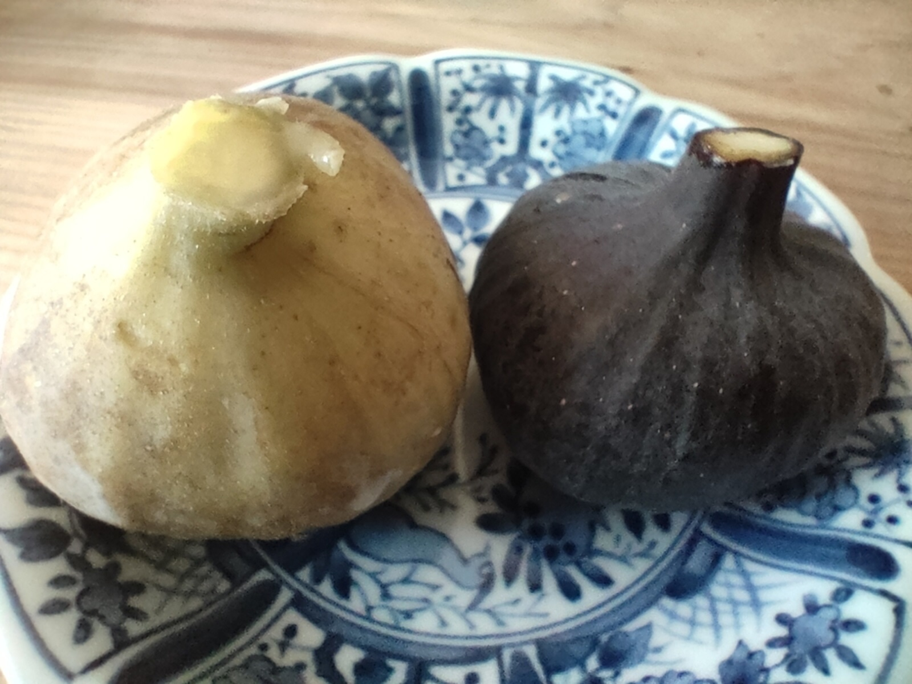
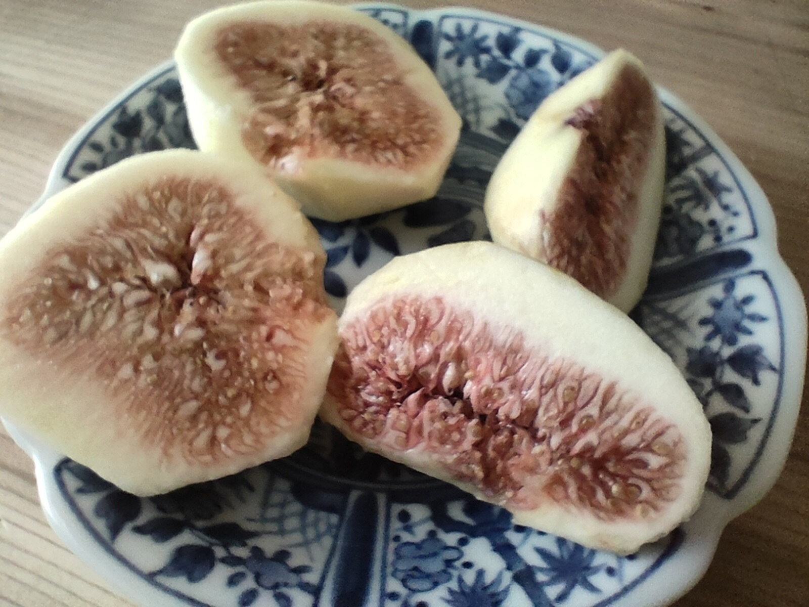

0003 いちじくが黒い？！

サイクリング中に時折、ほのかに甘い香りが漂うことがあります。 周りをみるとイチジク畑があることが多いです。 名産となっている広島県尾道市内では、この時期いちじく（蓬莱柿（ほうらいし））が旬を迎えています。 スーパーに立ち寄って、野菜や果物を見ていると 「ん？、ん？？？」と二度見、イチジクが黒い？

関東で40年を暮らしましたが、今まで見たことがありませんでした。 外観は黒ニンニクっぽい？
中身はというと、 皮が黒いだけで中身はあまり変わらない感じでした。 味は黒いいちじくの方が若干濃いかな？、うーん、あまり変わらない？ ネットで調べると幻、とも言われているようなので、もし見つけたらぜひお試しあれ(^^♪